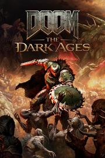

 |
|
| Tiempo de juego | No Jugado |
| Última actividad | Nunca |
| Añadido | 22/09/2025 18:01:23 |
| Modificado | 20/11/2025 13:56:23 |
| Estado de finalización | Not Played |
| Librería | Playnite |
| Fuente | POR ACTIVACION |
| Plataforma | PC (Windows) |
| Fecha de lanzamiento | 14/05/2025 |
| Puntuación de la Comunidad | 86 |
| Puntuación de la Crítica | |
| Puntuación de usuario | |
| Género | Acción |
| Desarrollador | id Software |
| Editor | Bethesda Softworks |
| Característica | Alternativas De Color Cloud Saves Compat. Total Con Mando Cromos De Dificultad Ajustable HDR Disponible Logros De Préstamo Familiar Sonido Envolvente Un Jugador |
| Enlaces | Punto de encuentro Discusiones Guías Noticias Página de la tienda PCGamingWiki Logros |
| Tag | Acción Ambientales Aventura Buena trama Ciencia ficción Cinematográficos De ritmo rápido Demonios Disparos Disparos clásicos Dragones Fantasía oscura FPS Mechas Mitos y leyendas Para adultos Primera persona Sangre Sangriento Un jugador |
LUCHA EN LA PIEL DEL SLAYER EN UNA GUERRA MEDIEVAL CONTRA EL INFIERNO
DOOM: The Dark Ages es la precuela de los aclamados DOOM (2016) y DOOM Eternal, y narra el épico y cinematográfico origen de la furia del DOOM Slayer. En esta tercera entrega de la saga moderna de DOOM, los jugadores se pondrán en la piel del DOOM Slayer en una oscura y siniestra guerra medieval contra el infierno nunca antes vista.
DOOM: The Dark Ages es una experiencia para un jugador ambientada en un mundo de fantasía oscura y ciencia ficción que ofrece los intensos combates y los espectaculares gráficos de la incomparable franquicia DOOM, mediante el último motor de idTech.
SOMETE AL INFIERNO
Como el superarma de dioses y reyes, harás pedazos a enemigos con tus devastadoras armas favoritas, como la superescopeta, pero también podrás empuñar una variedad de nuevas y brutales armas, como el versátil escudo sierra. Resistirás las acometidas y lucharás en los campos de batalla infestados de demonios en los salvajes e intensos combates por los que es famosa la saga original de DOOM.
RESISTE LAS ACOMETIDAS Y LUCHA
Descubre el origen de la furia del DOOM Slayer en esta épica y cinematográfica historia cargada de acción. El DOOM Slayer, destinado a convertirse en el superarma de dioses y reyes, repele hordas de demonios mientras su líder intenta destruirlo para convertirse en el único terror del infierno. Presencia la forja de una leyenda conforme el Slayer va derrotando a las fuerzas demoníacas y cambia el curso de la guerra.
DESCUBRE REINOS DESCONOCIDOS
En su misión por aplastar a las legiones del infierno, el Slayer se adentrará en reinos inexplorados. Castillos abandonados, campos de batalla épicos, bosques oscuros, páramos ancestrales y mundos del más allá cubiertos de misterio que ocultan un sinfín de desafíos y recompensas. Atraviesa un universo oscuro repleto de amenazas y secretos armado con el poderoso y letal escudo sierra en los niveles más extensos de id Software jamás vistos.